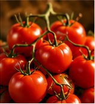
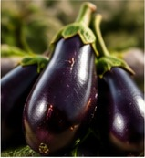
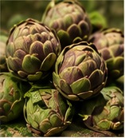
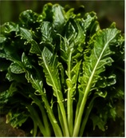
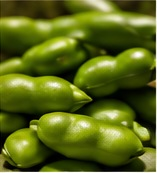
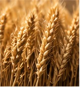
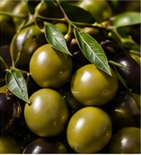
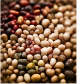
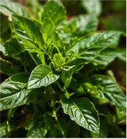

LA NOSTRA FILOSOFIA
La terra detta il ritmo.
La nostra cucina nasce dal rispetto per la stagionalità, dalla selezione di materie prime locali e dal dialogo con produttori che condividono la nostra attenzione per qualità e territorio.
LA TERRA
Orti, ulivi, grani e stagionalità.
LA NOSTRA FILOSOFIA
La nostra cucina nasce dal rispetto per la stagionalità, dalla selezione di materie prime locali e dal dialogo con produttori che condividono la nostra attenzione per qualità e territorio.
PROVENIENZA
Ortaggi, legumi, grani, olio extravergine ed erbe aromatiche provengono prevalentemente dal territorio, scegliendo ogni prodotto nel suo momento migliore.
LE MATERIE PRIME









Seguiamo ciò che la terra offre, scegliendo ogni ingrediente quando raggiunge la sua espressione migliore.
LA STAGIONE
Seguiamo il ritmo della natura per lavorare gli ingredienti quando esprimono al meglio sapore, consistenza e identità.
I NOSTRI PIATTI